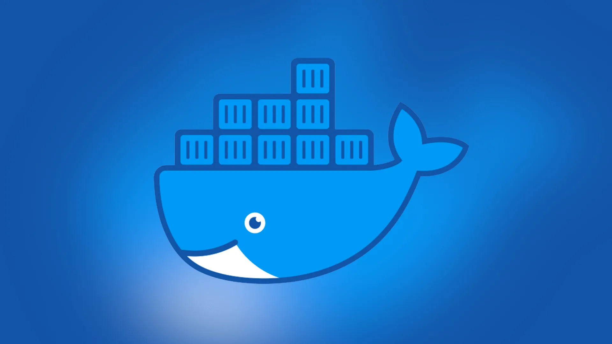
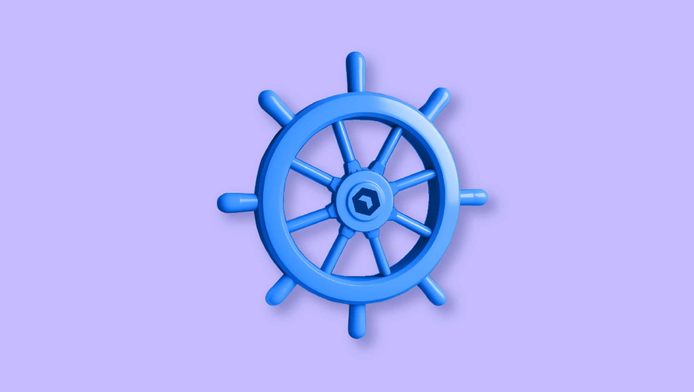

Docker en Kubernetes
Let's orchestrate the virtual world of containers.
Let's orchestrate the virtual world of containers.
kubernetes maakt orkestratie mogelijk, dit betekent een automatiseren en mannagment van containers. Eigen aan containers is dat het een autonoom stuk code bevat die zelden onveranderlijk zijn en kunnen binnen enkele seconden worden opgestart. (Manueel of autonoom)
Kubernetes start de containers op, zorgt voor load balans, failovers, routing van netwerkverkeer en upscaling/downscaling van alle resources.
De sterkte van kubernetes is dat het ingrijpt als o.a een container vastloopt, het zorgd dan tijdelijk voor een andere container zodat er weinig of geen probleem merkbaar is.
Wat kubernetes uniek maakt is dat het de menselijke factor als zwakste schakel uitschakelt. Stel dat je een paar honderd containers hebt draaien, Als je deze allemaal manueel zal beheren is een fout niet uit te sluiten.
Door deze processen volautomatisch te laten lopen kan je zulke fouten voorkomen, daarnaast zal het je ook veel tijd besparen.

Docker is software dat gemaakt is voor systeembeheerders en ontwikkelaars.
Het is een manier voor het ontwikkelen, verschepen en uitvoeren van software door het te beheren in een virtuele
Docker maakt gebruik van containerisatie-technologie die software gaat verpakken en isoleren waardoor de toepassing minder afhankelijk word van de host.
Het is dus betrouwbaarder, eenduidiger en kan eenvoudiger worden verscheept en uitgevoerd op verschillende omgevingen.
Voor ontwikkelaars is dit een eenvoudige manier om applicaties te bouwen, distribueren en schalen ongeacht de host waar de container op draait.

Kubernetes ook wel bekend als k8s is een Griekse benaming voor ‘stuurman’ van een schip. De software is tot stand gekomen bij google als een open-source systeem om grote groepen gecontaineriseerde applicaties te beheren.
Engineers hadden de software ontwikkeld omdat er dringend behoefte was aan het ondersteunen van de groeiende hyperscale infrastructuur.
De containers die op de hosts draaien worden beheerd vanuit één machine (meestal de server) die de containers gaat aansturen.
Door van kubernetes een open-source te maken waren ze in staat om meer kennis te vergaren en zo de software verbeteren.
In dit project gaan we Docker, docker-compose en kubernetes installeren op nodes.
nodes zijn de besturingssystemen waar Docker gaat op draaien en beheerd worden met Kubernetes.
Dit kan Windows, Chrome, Mac of Linux (met of zonder grafische omgeving) zijn maar in dit project werken we met Linux.
In het project zijn 3 workernodes gemaakt waar Docker op geïnstalleerd word met de containers.
Op de masternode zal Kubernetes draaien waaruit de containers bestuurd zullen worden en de containers in pods beheerd op de workernodes.
De images van de Docker container gaan we op 2 verschillende manieren bekomen: